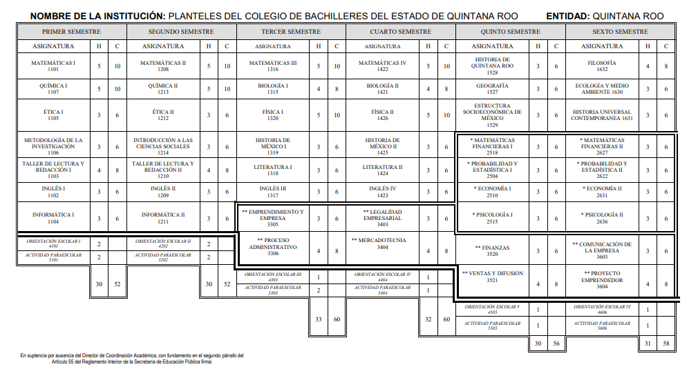
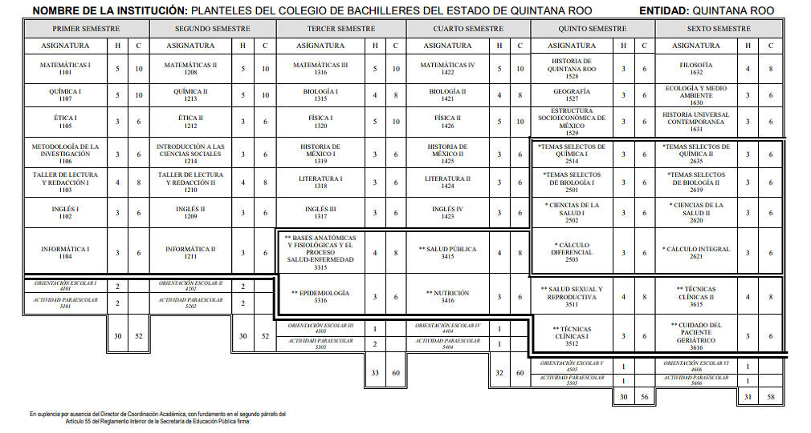
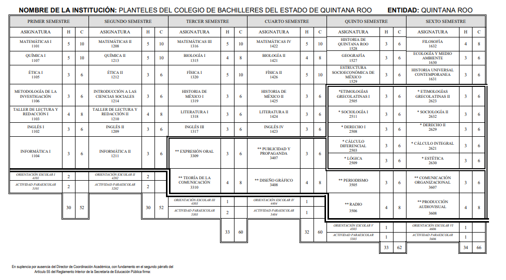
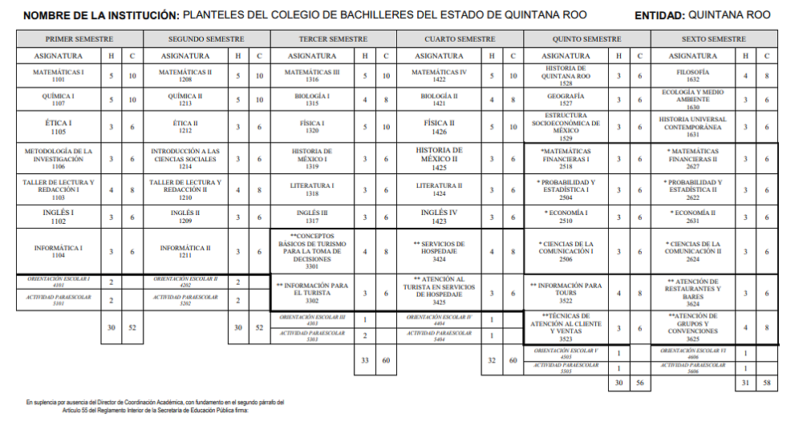
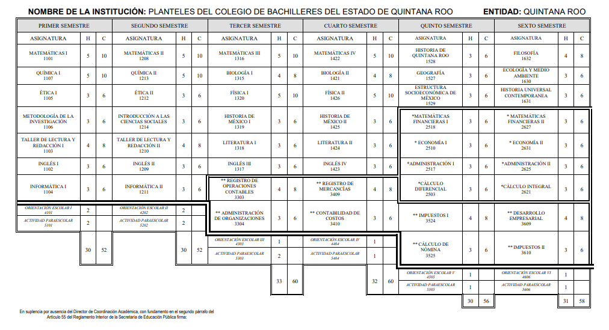

-
Administración
La administración es una de las actividades humanas más importantes, encargada de organizar y dirigir el trabajo individual y colectivo efectivo en términos de objetivos. La Administración es un proceso distintivo que consiste en la planeación, organización, ejecución y control, ejecutados para determinar y lograr los objetivos, mediante el uso de gente y recursos. esta capacinaticon prepara a los alumnos a manejar cuentas bancarias, creaciones de empresas y emprendiientos, que les ayudaran en el futuro.
Mapa curricular de 6 semestres

-
Tecnologías de la Información y Comunicación
Las Tecnologías de la Información y las Comunicaciones (TIC), son el conjunto de recursos, herramientas, equipos, programas informáticos, aplicaciones, redes y medios; que permiten la compilación, procesamiento, almacenamiento, transmisión de información como: voz, datos, texto, video e imágenes.
En esta disciplina, se estudian todos los procesos que tengan relación a la protección, monitoreo, procesamiento de datos, y transmisión de la información en el mundo digital por medio de sistemas computacionales.
Mapa curricular de 6 semestres

-
Comunicación
Se encarga de estudiar los orígenes, el progreso y los cambios en la comunicación humana, desde lo personal hasta lo colectivo. Además, examina las relaciones y problemáticas sociales a través de los contenidos escritos, orales y audiovisuales. La comunicación como materia de estudio tiene el fin de crear mensajes claros y con un significado para quienes esté dirigido, el mensaje puede ser creado con fines de entretenimiento, informativo, lucrativo etc.
Mapa curricular de 6 semestres

-
Servicios de Turismo en Inglés
Tiene como principal objetivo velar por la adecuada administración, gestión y organización de las actividades turísticas. Además, de impulsar y dar a conocer los principales atractivos turísticos de una región en particular. Tiene como objetivo que los egresados sean profesionales comprometidos con el desarrollo del sector turístico en su país, para beneficio de la comunidad receptora y que genere experiencias inolvidables para los visitantes.
Mapa curricular de 6 semestres

-
Contabilidad
Tienen las habilidades para controlar la situación financiera, evaluar las implicaciones financieras de las decisiones empresariales y preparar la contabilidad de la empresa para asegurarse de que tenga un reporte preciso de sus actividades.La contabilidad se encarga del estudio, análisis y orientación de los recursos económicos de una institución, con el objetivo de evaluar las implicaciones financieras de ciertas actividades empresariales, por lo que se trata de una profesión totalmente encaminada al mundo corporativo y mercantil.
Mapa curricular de 6 semestres
